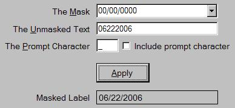

Title: Masked Label Control
Author: Eric Woodruff
Email: Eric@EWoodruff.us
Environment: Visual Studio .NET, Windows Forms, C#, VB.NET
Keywords: label, mask, MaskedTextBox, MaskedTextProvider
Level: Intermediate
Description: A derived label control that can format its text using the same
mask characters as the MaskedTextBox control.
Section C# Windows Forms
SubSection C# Controls

MaskedTextBox control that allows
you to specify a mask that is used to restrict the input characters and
make the entered text conform to a specific format. One of the features of
the control is that you can retrieve the text from it excluding the literal
characters when the TextMaskFormat property is set to
ExcludePromptAndLiterals. The problem with the unmasked text is
that if you want to display it outside of the text box control, you need to
manually put the mask characters back into it. You could just use a
disabled MaskedTextBox control but the text is usually harder to
read. You could make it read-only but the text box can still be focused.
It also does not solve the problem if you want to display the value as part
of a larger string or in a message box. As such, I created the
MaskedLabel control.
The control is just a simple Label control with a few
extra properties that let you specify the mask to apply when you set its
text. In addition, it has a static overloaded Format method
that you can use to format text with a mask so that it can be used in other
ways without the need of an actual control instance (i.e. format and
display the text in a message box). The supplied demo contains the
assembly, a help file, and a demo application. See the help file for
details on installing the assembly in the Visual Studio .NET tool box. You
can also extract the MaskedLabel.cs source file for use in your own
projects or control libraries.
EWSoftware.MaskedLabelControl namespace, you will have to add a
using statement (Imports in
VB.NET) for the EWSoftware.MaskedLabelControl namespace.
To use the MaskedLabel control, simply drag it from the
toolbox and drop it on your form. The following additional properties are
available:
Mask - At a minimum, you need to set this property to
define the mask used to format the text. The mask can be anything that the
MaskedTextBox control supports. If no mask is set or the text
is not valid for the mask, the text is displayed in its unmasked form.Culture - This can be set to specify the culture
information used by the underlying masked text provider. The current
culture is used if one is not specified.IncludePrompt - If set to true and the specified text
does not completely fill the mask, the formatted text will be filled out to
show the prompt character in the unused spaces. If set to false (the default),
the formatted text displays only as much as it has.PromptChar - This can be set to specify the prompt
character to display if the IncludePrompt property is set to
true. The default is an underscore (_).Text
property will get it to show the text with the mask applied. Reading the
Text property returns the formatted text. The following
read-only properties can provide some information about the formatting
process should you need it:
MaskedTextProvider - This returns a clone of the masked
text provider object based on the control's current settings.ResultHint - This returns the result hint for the last
assignment to the Text property. If the assigned text could not
be properly formatted, this will contain a hint as to why not. Positive
values indicate success. Negative values indicate failure.HintPosition - This returns the result hint position
for the last assignment to the Text property. If the assigned
text could not be properly formatted, this will contain the position of the
first failure.UnmaskedText - As its name implies, this returns a copy
of the unmasked text that was last assigned to the Text
property.Format method allows you to format masked text
outside of the control. There are four overloads for the method. The
simplest one takes the format string and the unmasked text. Again, the
mask can be anything that the MaskedTextBox control supports.
The other three take additional parameters for the prompt character,
culture, and result hint information.
// Format a value
string formattedText = MaskedLabel.Format("000-00-0000",
"123121234");
// Show a prompt character in missing positions
string withPrompt = MaskedLabel.Format("000-00-0000",
"12312", '_');
// Show a currency value using the French culture
string withCulture = MaskedLabel.Format("$0.00",
"123", '\x0', new CultureInfo("fr-FR"));
// Format text and get the results
MaskedTextResultHint hint;
int pos;
string badText = MaskedLabel.Format("00/00", "123456",
'\x0', null, out hint, out pos);
MaskedTextBox control utilizes the
MaskedTextProvider to handle all of the format related
properties and tasks. This makes it quite simple to utilize the same
formatting in other controls such as the MaskedLabel control.
To use it, you construct a new instance specifying the mask and an optional
culture. Other properties can be used to set the prompt character and
other such options. To obtain a formatted text value, you call its
Set method. This formats the text and returns result information
such as whether or not the text was valid for the mask. Using the masked
text provider's ToString method returns the formatted text.
Below is the MaskedLabel control's Format method
that illustrates this process.
public static string Format(string mask, string text,
char promptChar, CultureInfo culture,
out MaskedTextResultHint hint, out int hintPosition)
{
if(text == null)
text = String.Empty;
if(culture == null)
culture = CultureInfo.CurrentCulture;
MaskedTextProvider provider =
new MaskedTextProvider(mask, culture);
// Set the prompt character options
if(promptChar != '\x0')
{
provider.PromptChar = promptChar;
provider.IncludePrompt = true;
}
// Format and return the string
provider.Set(text, out hintPosition, out hint);
// Positive hint results are successful
if(hint > 0)
return provider.ToString();
// Return the text as-is if it didn't fit the mask
return text;
}
MaskedTextProvider. It
always formats the text from left to right filling in positions as it goes.
As such, if the mask contains optional characters anywhere but at the end
of the mask, you generally do not end up with the formatted value that you
would expect. This is most easily shown with a format string such as
"990.00". If you specify the text "123", you end up with "123." rather
than "1.23". As such, the masked text provider works best when there are
no optional characters or where they only appear at the end of the mask.
| 06/26/2006 | Initial release |